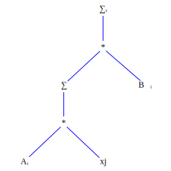
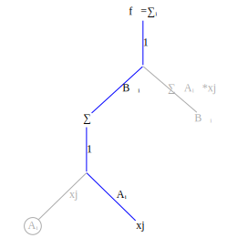
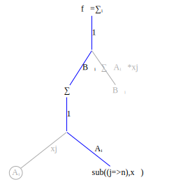
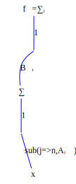
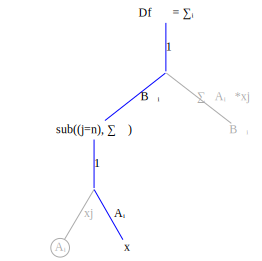
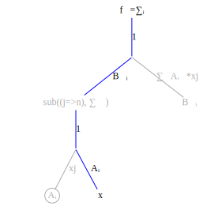

In the first example the summation operator $\sum\limits_{j}$ disappeared because the summation index and the substitution index were the same. The summation is only non-zero when the summation index equals the substitution so the summation collapsed to a single term.
The next example shows a case where this is not true: given $f_k = B_{ki}A_{ij}x_j$ compute $\frac{\partial f_k}{\partial x_n}$.
First create the function graph corresponding to $f_k = B_{ki}A_{ij}x_j$ 
Now transform to a derivative graph and gray out edges and nodes which do not contribute to the derivative: 
Create the substitution rule by locating by locating the variable node $x_j$.

Apply the substitution rule up the graph
 
No terms higher in the graph than the $\sum\limits_{j}$ node use the index $j$ so none of them are affected by the substitution rule $sub((j=n))$.

The final result is
\[\frac{\partial f_k}{\partial x_n} = Df_{kn}= \sum\limits_{i} B_{ki}A_{in}\]
Create a FastDifferentiation function to check the result:
julia> function BAx()
B = make_variables(:B, 2, 2)
A = make_variables(:A, 2, 2)
x = make_variables(:x, 2)
f = FD.Node.(B * (A * x))
jac = jacobian(f, x)
display(jac)
end
...
julia> BAx()
2×2 Matrix{FastDifferentiation.Node}:
((B1_1 * A1_1) + (B1_2 * A2_1)) ((B1_1 * A1_2) + (B1_2 * A2_2))
((B2_1 * A1_1) + (B2_2 * A2_1)) ((B2_1 * A1_2) + (B2_2 * A2_2))Write a Julia function to compute the index solution and compare results to FastDifferentiation:
function index_solution_x()
B = make_variables(:B, 2, 2)
A = make_variables(:A, 2, 2)
[sum([B[k, i] * A[i, n] for i in 1:size(B)[2]]) for k in 1:size(B)[1], n in 1:size(A)[2]]
end
julia> index_solution_x()
2×2 Matrix{FastDifferentiation.Node}:
((B1_1 * A1_1) + (B1_2 * A2_1)) ((B1_1 * A1_2) + (B1_2 * A2_2))
((B2_1 * A1_1) + (B2_2 * A2_1)) ((B2_1 * A1_2) + (B2_2 * A2_2))